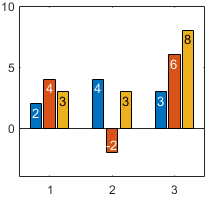
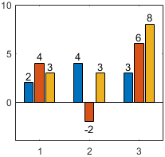

Bar Properties
Bar chart appearance and behavior
Bar properties control the appearance and
behavior of a Bar object. By changing property values,
you can modify certain aspects of the bar chart. Use dot notation to query and set
properties.
b = bar(1:10); c = b.FaceColor b.FaceColor = [0 0.5 0.5];
Color and Styling
Fill color, specified as 'flat', an RGB triplet, a hexadecimal
color code, a color name, or a short name. The 'flat' option uses the
CData property value of the Bar object to
color the faces.
For a custom color, specify an RGB triplet or a hexadecimal color code.
An RGB triplet is a three-element row vector whose elements specify the intensities of the red, green, and blue components of the color. The intensities must be in the range
[0,1], for example,[0.4 0.6 0.7].A hexadecimal color code is a string scalar or character vector that starts with a hash symbol (
#) followed by three or six hexadecimal digits, which can range from0toF. The values are not case sensitive. Therefore, the color codes"#FF8800","#ff8800","#F80", and"#f80"are equivalent.
Alternatively, you can specify some common colors by name. This table lists the named color options, the equivalent RGB triplets, and the hexadecimal color codes.
| Color Name | Short Name | RGB Triplet | Hexadecimal Color Code | Appearance |
|---|---|---|---|---|
"red" | "r" | [1 0 0] | "#FF0000" |
|
"green" | "g" | [0 1 0] | "#00FF00" |
|
"blue" | "b" | [0 0 1] | "#0000FF" |
|
"cyan"
| "c" | [0 1 1] | "#00FFFF" |
|
"magenta" | "m" | [1 0 1] | "#FF00FF" |
|
"yellow" | "y" | [1 1 0] | "#FFFF00" |
|
"black" | "k" | [0 0 0] | "#000000" |
|
"white" | "w" | [1 1 1] | "#FFFFFF" |
|
"none" | Not applicable | Not applicable | Not applicable | No color |
This table lists the default color palettes for plots in the light and dark themes.
| Palette | Palette Colors |
|---|---|
Before R2025a: Most plots use these colors by default. |
|
|
|
You can get the RGB triplets and hexadecimal color codes for these palettes using the orderedcolors and rgb2hex functions. For example, get the RGB triplets for the "gem" palette and convert them to hexadecimal color codes.
RGB = orderedcolors("gem");
H = rgb2hex(RGB);Before R2023b: Get the RGB triplets using RGB =
get(groot,"FactoryAxesColorOrder").
Before R2024a: Get the hexadecimal color codes using H =
compose("#%02X%02X%02X",round(RGB*255)).
Starting in R2017b, the default value is an RGB triplet from the
ColorOrder property of the axes. In previous releases, the
default value was 'flat' and the colors were based on the
colormap.
Example: b = bar(1:10,'FaceColor','red')
Example: b.FaceColor = [0 0.5 0.5];
Example: b.FaceColor = 'flat';
Example: b.FaceColor = '#D2F9A7';
Control how the FaceColor property is set, specified as one of these values:
"auto"— MATLAB® controls the value of theFaceColorproperty by using theSeriesIndexproperty of theBarobject and theColorOrderproperty of the axes."manual"— You set the value of theFaceColorproperty directly, or indirectly as a function argument when you create theBarobject.
If you change the value of the FaceColor property manually, MATLAB changes the value of the FaceColorMode property to
"manual".
Outline color, specified as 'flat', an RGB triplet, a hexadecimal
color code, a color name, or a short name. If there are 150 bars or fewer, the default
value is [0 0 0], which corresponds to black. If there are more than
150 adjacent bars, the default value is 'none'.
Starting in R2017b, the 'flat' option uses the
CData values to color the edges. In previous releases, the
'flat' option colored the edges using colors from the
colormap.
For a custom color, specify an RGB triplet or a hexadecimal color code.
An RGB triplet is a three-element row vector whose elements specify the intensities of the red, green, and blue components of the color. The intensities must be in the range
[0,1], for example,[0.4 0.6 0.7].A hexadecimal color code is a string scalar or character vector that starts with a hash symbol (
#) followed by three or six hexadecimal digits, which can range from0toF. The values are not case sensitive. Therefore, the color codes"#FF8800","#ff8800","#F80", and"#f80"are equivalent.
Alternatively, you can specify some common colors by name. This table lists the named color options, the equivalent RGB triplets, and the hexadecimal color codes.
| Color Name | Short Name | RGB Triplet | Hexadecimal Color Code | Appearance |
|---|---|---|---|---|
"red" | "r" | [1 0 0] | "#FF0000" |
|
"green" | "g" | [0 1 0] | "#00FF00" |
|
"blue" | "b" | [0 0 1] | "#0000FF" |
|
"cyan"
| "c" | [0 1 1] | "#00FFFF" |
|
"magenta" | "m" | [1 0 1] | "#FF00FF" |
|
"yellow" | "y" | [1 1 0] | "#FFFF00" |
|
"black" | "k" | [0 0 0] | "#000000" |
|
"white" | "w" | [1 1 1] | "#FFFFFF" |
|
"none" | Not applicable | Not applicable | Not applicable | No color |
This table lists the default color palettes for plots in the light and dark themes.
| Palette | Palette Colors |
|---|---|
Before R2025a: Most plots use these colors by default. |
|
|
|
You can get the RGB triplets and hexadecimal color codes for these palettes using the orderedcolors and rgb2hex functions. For example, get the RGB triplets for the "gem" palette and convert them to hexadecimal color codes.
RGB = orderedcolors("gem");
H = rgb2hex(RGB);Before R2023b: Get the RGB triplets using RGB =
get(groot,"FactoryAxesColorOrder").
Before R2024a: Get the hexadecimal color codes using H =
compose("#%02X%02X%02X",round(RGB*255)).
Example: b = bar(1:10,'EdgeColor','red')
Example: b.EdgeColor = [0 0.5 0.5];
Example: b.EdgeColor = 'flat';
Example: b.EdgeColor = '#D2F9A7';
Face transparency, specified as a scalar in the range
[0,1]. A value of 1 is opaque and 0 is completely
transparent. Values between 0 and 1 are semitransparent.
Example: b = bar(1:10,'FaceAlpha',0.5)
Example: b.FaceAlpha = 0.5;
Edge transparency, specified as a scalar in the range
[0,1]. A value of 1 is opaque and 0 is completely
transparent. Values between 0 and 1 are semitransparent.
Example: b = bar(1:10,'EdgeAlpha',0.5)
Example: b.EdgeAlpha = 0.5;
Line style, specified as one of the options listed in this table.
| Line Style | Description | Resulting Line |
|---|---|---|
"-" | Solid line |
|
"--" | Dashed line |
|
":" | Dotted line |
|
"-." | Dash-dotted line |
|
"none" | No line | No line |
Series index, specified as a positive whole number or
"none". This property is useful for matching the
colors of graphics objects, such as text, plot lines, or other
Bar objects.
By default, the SeriesIndex property of a
Bar object is a number that corresponds to
its order of creation, starting at 1. MATLAB uses the number to calculate an index for automatically
assigning colors when you call plotting functions. The index refers to the
rows of the array stored in the ColorOrder property of
the axes. Any objects in the axes that have the same
SeriesIndex number will have the same color.
A SeriesIndex
value of "none" corresponds to a neutral color that does
not participate in the indexing scheme. (since R2023b)
How Manual Color Assignment Overrides SeriesIndex Behavior
To manually control the colors of the bars, use either of these approaches:
One color for all bars — Set the
FaceColorproperty to a color name, RGB triplet, or a hexadecimal color code.Different colors for one or more bars — Set the
FaceColorproperty to"flat". Then set theCDataproperty to an RGB triplet, matrix of RGB triplets, scalar colormap index, or a vector of colormap indices.
When you manually set the color of a Bar
object, MATLAB disables automatic color selection for that object and
allows your color to persist, regardless of the value of the
SeriesIndex property. The mode properties,
FaceColorMode and
CDataMode, indicate whether the colors have
been set manually (by you) or automatically. A value of
"manual" indicates manual selection, and a value
of "auto" indicates automatic selection.
To enable automatic selection again, set the
SeriesIndex property to a positive whole number
and perform either of these steps:
Set the
FaceColorModeproperty to"auto".Set the
FaceColorproperty to"flat", and set theCDataModeproperty to"auto".
In some cases, MATLAB sets the SeriesIndex property to
0, which also disables automatic color
selection.
Bar Labels
Since R2024b
Bar labels, specified as a string vector, cell array of character vectors, numeric vector, datetime vector, duration vector, or categorical vector. The length of the vector must match the number of bars.
When the chart displays multiple series of grouped or stacked bars, each
series corresponds to one Bar object. Set the
Labels property for each Bar
object that you want labeled.
Since R2024b
Location of bar labels, specified as "end-inside" or
"end-outside". You might need to adjust the axes
limits to provide enough space for the labels.
| Value | Example |
|---|---|
|

|
|

|
Since R2024b
Control how the LabelLocation property is set,
specified as one of these values:
"auto"— MATLAB controls the value of theLabelLocationproperty depending on whether the bars are grouped or stacked."manual"— You set the value of theLabelLocationproperty directly, and the location does not change.
If you change the value of the LabelLocation property
manually, MATLAB changes the value of the
LabelLocationMode property to
"manual".
Since R2024b
Label color, specified as an RGB triplet, hexadecimal color code, color name, or short name. To use a different color for each label, specify an m-by-3 matrix of RGB triplets or a string vector of m hexadecimal color codes, color names, or short names. The value m is the number of labels (one for each bar).
For a custom color, specify an RGB triplet or a hexadecimal color code.
An RGB triplet is a three-element row vector whose elements specify the intensities of the red, green, and blue components of the color. The intensities must be in the range
[0,1], for example,[0.4 0.6 0.7].A hexadecimal color code is a string scalar or character vector that starts with a hash symbol (
#) followed by three or six hexadecimal digits, which can range from0toF. The values are not case sensitive. Therefore, the color codes"#FF8800","#ff8800","#F80", and"#f80"are equivalent.
Alternatively, you can specify some common colors by name. This table lists the named color options, the equivalent RGB triplets, and the hexadecimal color codes.
| Color Name | Short Name | RGB Triplet | Hexadecimal Color Code | Appearance |
|---|---|---|---|---|
"red" | "r" | [1 0 0] | "#FF0000" |
|
"green" | "g" | [0 1 0] | "#00FF00" |
|
"blue" | "b" | [0 0 1] | "#0000FF" |
|
"cyan"
| "c" | [0 1 1] | "#00FFFF" |
|
"magenta" | "m" | [1 0 1] | "#FF00FF" |
|
"yellow" | "y" | [1 1 0] | "#FFFF00" |
|
"black" | "k" | [0 0 0] | "#000000" |
|
"white" | "w" | [1 1 1] | "#FFFFFF" |
|
This table lists the default color palettes for plots in the light and dark themes.
| Palette | Palette Colors |
|---|---|
Before R2025a: Most plots use these colors by default. |
|
|
|
You can get the RGB triplets and hexadecimal color codes for these palettes using the orderedcolors and rgb2hex functions. For example, get the RGB triplets for the "gem" palette and convert them to hexadecimal color codes.
RGB = orderedcolors("gem");
H = rgb2hex(RGB);Before R2023b: Get the RGB triplets using RGB =
get(groot,"FactoryAxesColorOrder").
Before R2024a: Get the hexadecimal color codes using H =
compose("#%02X%02X%02X",round(RGB*255)).
Since R2024b
Control how the LabelColor property is set, specified
as one of these values:
"auto"— MATLAB controls the value of theLabelColorproperty by selecting a neutral contrasting color."manual"— You set the value of theLabelColorproperty directly, and the color does not change.
If you change the value of the LabelColor property
manually, MATLAB changes the value of the LabelColorMode
property to "manual".
Font size, specified as a scalar value greater than zero in point units.
The default font size depends on the specific operating system and locale.
One point equals 1/72 inch.
Bar Graph Type
Since R2024a
Width of the bar groups, specified as a scalar in the range [0, 1]. This
property specifies the fraction of the available space for a group of bars.
It has no effect if the bars are not grouped. A value of
1 uses all of the available space for each group, but
it minimizes the space between groups. Smaller values produce thinner bars
with more space between the groups.
For example, these bar charts are the same except for their
GroupWidth values. As the
GroupWidth value increases, the bars become wider
and the groups become harder to distinguish.

Plotting groups of bars produces multiple Bar objects.
Changing the GroupWidth property of one object changes
the value for all of the objects.
Since R2024a
Control how the GroupWidth property is set, specified
as one of these values:
"auto"— MATLAB selects theGroupWidthvalue based on the number of groups."manual"— You specify theGroupWidthvalue.
Horizontal bar chart, specified as 'on' or
'off', or as numeric or logical 1
(true) or 0
(false). A value of 'on' is
equivalent to true, and 'off' is
equivalent to false. Thus, you can use the value of this
property as a logical value. The value is stored as an on/off logical value
of type matlab.lang.OnOffSwitchState.